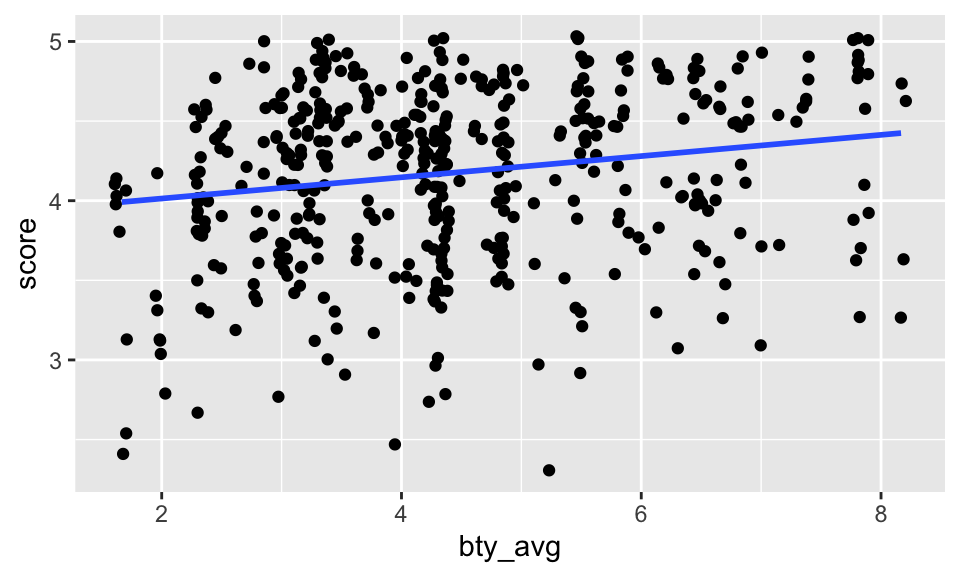

evals <- read_csv("https://www.openintro.org/data/csv/evals.csv")Lab 12 - Math 58B: Multiple Linear Regression
Lab Goals
- a full analysis including multiple variables
- including inference in the linear model
- checking technical conditions using scatter plots (more generally, residual plots are used to check technical conditions when there are multiple explanatory variables, but we ran out of time to fully cover residual plots)
- choosing variables for the multiple linear regression
Grading the professor
Many college courses conclude by giving students the opportunity to evaluate the course and the instructor anonymously. However, the use of these student evaluations as an indicator of course quality and teaching effectiveness is often criticized because these measures may reflect the influence of non-teaching related characteristics, such as the physical appearance of the instructor. The research found that instructors who are viewed to be better looking receive higher instructional ratings.1
The data
The data were gathered from end of semester student evaluations for a large sample of professors at the University of Texas, Austin. Additionally, six students rated the professors’ physical appearance.2 In the resulting data frame, each row represents a different course and columns represent variables about the courses and professors.
| variable | description |
|---|---|
score |
average professor evaluation score: (1) very unsatisfactory - (5) excellent. |
rank |
rank of professor: teaching, tenure track, tenured. |
ethnicity |
ethnicity of professor: not minority, minority. |
gender |
gender of professor: female, male. |
language |
language of school where professor received education: English or non-English. |
age |
age of professor. |
cls_perc_eval |
percent of students in class who completed evaluation. |
cls_did_eval |
number of students in class who completed evaluation. |
cls_students |
total number of students in class. |
cls_level |
class level: lower, upper. |
cls_profs |
number of professors teaching sections in course in sample: single, multiple. |
cls_credits |
number of credits of class: one credit (lab, PE, etc.), multi-credit. |
bty_f1lower |
beauty rating of professor from lower level female: (1) lowest - (10) highest. |
bty_f1upper |
beauty rating of professor from upper level female: (1) lowest - (10) highest. |
bty_f2upper |
beauty rating of professor from second upper level female: (1) lowest - (10) highest. |
bty_m1lower |
beauty rating of professor from lower level male: (1) lowest - (10) highest. |
bty_m1upper |
beauty rating of professor from upper level male: (1) lowest - (10) highest. |
bty_m2upper |
beauty rating of professor from second upper level male: (1) lowest - (10) highest. |
bty_avg |
average beauty rating of professor. |
pic_outfit |
outfit of professor in picture: not formal, formal. |
pic_color |
color of professor’s picture: color, black & white. |
Exploring the data
What are the observational units in this study?
Is this an observational study or an experiment? The original research question posed in the paper is whether beauty leads directly to the differences in course evaluations. Given the study design, is it possible to answer this question as it is phrased? If not, rephrase the question.
Describe the distribution of
score. Is the distribution skewed? What does that tell you about how students rate courses? Is this what you expected to see? Why, or why not?Excluding
score, select two other variables and describe their relationship using an appropriate visualization (scatterplot, side-by-side boxplots, barplot, or histogram).
Simple linear regression
The fundamental phenomenon suggested by the study is that better looking teachers are evaluated more favorably. Let’s create a scatterplot to see if this appears to be the case:
ggplot(evals) +
geom_point(aes(x = bty_avg, y = score))
Before we draw conclusions about the trend, compare the number of observations in the data frame with the approximate number of points on the scatterplot. Is anything awry?
It is hard to count the points, but we can definitely see some patterns that seem to have more to do with the data collection than the effect. That is, bty_avg is only scored on a few different values (similar for score, but less so).
Replot the scatterplot, but this time use the layer
geom_jitter(). What was misleading about the initial scatterplot?Let’s see if the apparent trend in the plot is something more than natural variation. Fit a linear model called
m_btyto predict average professor score by average beauty rating and add the line to your plot usinggeom_smooth(method = "lm"). Write out the equation for the linear model and interpret the slope. Is average beauty score a statistically significant predictor? Does it appear to be a practically significant predictor?
\[\begin{eqnarray*} \widehat{score} &=& b_0 + b_1 \times bty\_avg \\ &=& 3.88 + 0.067 \times bty\_avg \end{eqnarray*}\]
The line is pretty flat (despite having a significant p-value). That is, for every additional point of beauty, a professor’s score is predicted to be 0.067 higher on average. (The increase really isn’t very much.)
m_bty <- lm(score ~ bty_avg, data = evals)
m_bty %>% tidy()# A tibble: 2 × 5
term estimate std.error statistic p.value
<chr> <dbl> <dbl> <dbl> <dbl>
1 (Intercept) 3.88 0.0761 51.0 1.56e-191
2 bty_avg 0.0666 0.0163 4.09 5.08e- 5ggplot(evals, aes(x = bty_avg, y = score)) +
geom_jitter() +
geom_smooth(method = "lm", se = FALSE)
- Instead use the scatter plot to discuss whether you think the technical conditions are met. If you want to know more about residual plots, I’m happy to discuss! [Use residual plots to evaluate whether the conditions of least squares regression are reasonable. Provide plots and comments on whether the linear model seems reasonable here.]
Note that the augment() function will give you residuals (.resid) as well as predicted values (.fitted). Once you have the observations, you can plot them using ggplot(). Put .resid on the y-axis and .fitted on the x-axis. You might also use + geom_hline(yintercept = 0) to add a horizontal line at zero.
m_bty %>%
augment()# A tibble: 463 × 8
score bty_avg .fitted .resid .hat .sigma .cooksd .std.resid
<dbl> <dbl> <dbl> <dbl> <dbl> <dbl> <dbl> <dbl>
1 4.7 5 4.21 0.486 0.00247 0.535 0.00103 0.911
2 4.1 5 4.21 -0.114 0.00247 0.535 0.0000560 -0.213
3 3.9 5 4.21 -0.314 0.00247 0.535 0.000427 -0.587
4 4.8 5 4.21 0.586 0.00247 0.535 0.00149 1.10
5 4.6 3 4.08 0.520 0.00403 0.535 0.00192 0.974
6 4.3 3 4.08 0.220 0.00403 0.535 0.000343 0.412
7 2.8 3 4.08 -1.28 0.00403 0.532 0.0116 -2.40
8 4.1 3.33 4.10 -0.00244 0.00325 0.535 0.0000000340 -0.00457
9 3.4 3.33 4.10 -0.702 0.00325 0.534 0.00282 -1.32
10 4.5 3.17 4.09 0.409 0.00361 0.535 0.00106 0.765
# ℹ 453 more rowsMultiple linear regression
What about the model that includes bty_avg and gender? Instead, use a scatterplot where you’ve colored by gender. Does your scatterplot indicate that the technical conditions are met? [Does the residual plot meet the technical conditions?]
m_bty_gen <- lm(score ~ bty_avg + gender, data = evals)- P-values and parameter estimates should only be trusted if the conditions for the regression are reasonable. Instead, use a scatterplot where you’ve colored by gender. Does your scatterplot indicate that the technical conditions are met?
[Does the residual plot meet the technical conditions? Verify that the conditions for this model are reasonable using a residual plot. Make a residual plot to assess the technical conditions (remember to pipe the linear model into theaugment()function).] To force the lines to be parallel, you need a function from the moderndive package.
evals %>%
ggplot(aes(x = bty_avg, y = score, color = gender)) +
geom_point() +
moderndive::geom_parallel_slopes(se = FALSE)- With
genderin the model, isbty_avgstill a significant predictor ofscore? Has the addition ofgenderto the model changed the parameter estimate forbty_avg? (Find the model and pipe it into thetidy()output.)
Note that the estimate for gender is now called gendermale. You’ve already see this name change whenever you introduce a categorical variable. The reason is that R recodes gender from having the values of female and male to being an indicator variable called gendermale that takes a value of \(0\) for females and a value of \(1\) for males. (Such variables are often referred to as “dummy” variables.)
As a result, for females, the parameter estimate is multiplied by zero, leaving the intercept and slope form familiar from simple regression.
\[\begin{eqnarray*} \widehat{score}_F &=& b_0 + b_1 \times bty\_avg + b_2 \times (0) \\ &=& b_0 + b_1 \times bty\_avg \end{eqnarray*}\]
- What is the equation of the line corresponding to males? (Hint: For males, the parameter estimate is multiplied by 1.) For two professors who received the same beauty rating, which gender tends to have the higher course evaluation score?
The decision to call the indicator variable gendermale instead ofgenderfemale has no deep meaning. R simply codes the category that comes first alphabetically as a \(0\). (Advanced R topic: You can change the reference level of a categorical variable, which is the level that is coded as a 0, using therelevel function. Use ?relevel to learn more.)
Let’s visualize the two different models on the plot. Seemingly, the best fit linear model has a different intercept and a different slope across the two genders!
evals %>%
ggplot(aes(x = bty_avg, y = score, color = gender)) +
geom_point() +
geom_smooth(method = "lm", se = FALSE)- [Optional: only do this if you are curious about the model which allows for different slopes for the categorical variable. It’s fun and not very hard!!!] Create a new model predicting score by multiplying
bty_avgandgender. Write down (separately) the the equation of the line corresponding to females and males? (Hint: For males, the parameter estimate is multiplied by 1.) You will have two equations. Do your two equations have different slopes? Do the equations of the line match the plot above? Multiplying two variables together produces what we call interaction.
m_bty_gen_int <- lm(score ~ bty_avg * gender, data = evals)
m_bty_gen_int %>% tidy()# A tibble: 4 × 5
term estimate std.error statistic p.value
<chr> <dbl> <dbl> <dbl> <dbl>
1 (Intercept) 3.95 0.118 33.5 2.92e-125
2 bty_avg 0.0306 0.0240 1.28 2.02e- 1
3 gendermale -0.184 0.153 -1.20 2.32e- 1
4 bty_avg:gendermale 0.0796 0.0325 2.45 1.46e- 2\[\begin{eqnarray*} \widehat{score}_F &=& b_0 + b_1 \times bty\_avg + b_2 \times (0) + b_3 \times bty\_avg \times (0)\\ &=& b_0 + b_1 \times bty\_avg\\ &=& 3.95 + 0.031 \times bty\_avg \end{eqnarray*}\]
\[\begin{eqnarray*} \widehat{score}_M &=& b_0 + b_1 \times bty\_avg + b_2 \times (1) + b_3 \times bty\_avg \times (1)\\ &=& (b_0 + b_2) + (b_1 + b_3) \times bty\_avg\\ &=& (3.95 - 0.1835) + (0.031 + 0.0796) \times bty\_avg\\ &=& (3.7665) + (0.1106) \times bty\_avg \end{eqnarray*}\]
- [Still optional: extension of 11] Create a new model called
m_bty_rankwithgenderremoved andrankadded in. How does R appear to handle categorical variables that have more than two levels? Note that the rank variable has three levels:teaching,tenure track,tenured. Write down the three separate models for teach rank. Make a scatterplot to suggest whetherbty_avgseem to interact. If so, run an interaction model.
There are now three models, one for each rank of the professor!
\[\begin{eqnarray*} \widehat{score}_{teach} &=& b_0 + b_1 \times bty\_avg + b_2 \times (0) + b_3 \times (0) \\ &=& b_0 + b_1 \times bty\_avg\\ \widehat{score}_{tt} &=& b_0 + b_1 \times bty\_avg + b_2 \times (1) + b_3 \times (0)\\ &=& (b_0 + b_2) + b_1 \times bty\_avg\\ \widehat{score}_{tenured} &=& b_0 + b_1 \times bty\_avg + b_2 \times (0) + b_3 \times (1)\\ &=& (b_0 + b_3) + b_1 \times bty\_avg \end{eqnarray*}\]
The interpretation of the coefficients in multiple regression is slightly different from that of simple regression. The estimate for
bty_avgreflects how much higher a group of professors is expected to score if they have a beauty rating that is one point higher while holding all other variables constant. In this case, that translates into considering only professors of the same rank withbty_avgscores that are one point apart.
evals %>%
ggplot(aes(x = bty_avg, y = score, color = rank)) +
geom_point() +
geom_smooth(method = "lm", se = FALSE)From the plot, it doesn’t really seem like there is much interaction (that is, the lines seem mostly parallel), but we could run the model (using lm()) to see if the interaction terms are significant or not. From the model below, the p-values are not significant, and confirm the plot indicating that interaction is not needed to describe how the impact of bty_avg on score changes by rank.
m_bty_rank_inter <- lm(score ~ bty_avg * rank, data = evals)
m_bty_rank_inter %>% tidy()# A tibble: 6 × 5
term estimate std.error statistic p.value
<chr> <dbl> <dbl> <dbl> <dbl>
1 (Intercept) 4.10 0.150 27.4 1.80e-98
2 bty_avg 0.0417 0.0314 1.33 1.84e- 1
3 ranktenure track -0.0188 0.230 -0.0818 9.35e- 1
4 ranktenured -0.409 0.182 -2.25 2.52e- 2
5 bty_avg:ranktenure track -0.0264 0.0463 -0.570 5.69e- 1
6 bty_avg:ranktenured 0.0659 0.0392 1.68 9.38e- 2To Turn In
The search for the best model
So far, we’ve considered bty_avg, gender, and rank as variables which might predict score. How can we go about finding which variables to use in a model? Which are the best variables? Which are the most important variables? Which are the variables that are not significant?
Start with a full model that predicts professor score based on rank, ethnicity, gender, language of the university where they got their degree, age, proportion of students that filled out evaluations, class size, course level, number of professors, number of credits, average beauty rating, outfit, and picture color.
Q1. Learning Community Q
Describe one thing you learned from someone in your learning community this week (it could be: content, logistical help, background material, R information, etc.) 1-3 sentences.
Q2. Which variable is worst?
Which variable would you expect to have the highest p-value in this model? Why? Hint: Think about which variable would you expect to not have any association with the professor score. (Use your instincts, not anything technical about the data.)
Check your suspicions from the previous exercise. Include the model output in your response.
m_full <- lm(score ~ rank + ethnicity + gender + language + age + cls_perc_eval
+ cls_students + cls_level + cls_profs + cls_credits + bty_avg
+ pic_outfit + pic_color, data = evals)Q2. Ethnicity
Interpret the coefficient associated with the ethnicity variable.
Q3. Pare down the model
Drop the variable with the highest p-value and re-fit the model. Did the coefficients and significance of the other explanatory variables change? (One of the things that makes multiple regression interesting is that coefficient estimates depend on the other variables that are included in the model.) If not, what does this say about whether or not the dropped variable was collinear with the other explanatory variables?
Should we keep going and remove other variables? Which one(s)? Remove any variables (one at a time) that do not seem to be important to predicting score.
Q4. Technical Conditions
Verify that the conditions for this model are reasonable using a scatterplot or two. Or feel free to try out a residual plot.
Q5. Model Interpretation
Based on your final model, describe the characteristics of a professor and course at University of Texas at Austin that would be associated with a high evaluation score.
Q6. Independence technical condition?
The original paper describes how these data were gathered by taking a sample of professors from the University of Texas at Austin and including all courses that they have taught. Considering that each row represents a course, could this new information have an impact on any of the conditions of linear regression?
Q7. Infer to what population?
Would you be comfortable generalizing your conclusions to apply to professors generally (at any university)? Why or why not?
praise()[1] "You are perfect!"This is a product of OpenIntro that is released under a Creative Commons Attribution-ShareAlike 3.0 Unported. This lab was written by Mine Çetinkaya-Rundel and Andrew Bray.
Footnotes
Daniel S. Hamermesh, Amy Parker, Beauty in the classroom: instructors pulchritude and putative pedagogical productivity, Economics of Education Review, Volume 24, Issue 4, August 2005, Pages 369-376, ISSN 0272-7757, 10.1016/j.econedurev.2004.07.013. http://www.sciencedirect.com/science/article/pii/S0272775704001165.↩︎
Data are from (slightly modified) Data Analysis Using Regression and Multilevel/Hierarchical Models (Gelman & Hill, 2007).↩︎